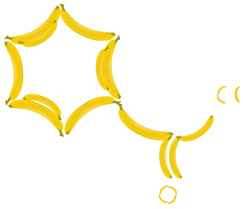

Painter format (paint)¶
Commands used to generate a 2D depiction of a molecule
This is a utility format that is useful if you want to generate a depiction of a molecule yourself, for example by drawing on a Graphics2D canvas in Java. The format writes out a list of drawing commands as shown in the following example:
obabel -:CC(=O)Cl -opaint
NewCanvas 149.3 140.0
SetPenColor 0.0 0.0 0.0 1.0 (rgba)
DrawLine 109.3 100.0 to 74.6 80.0
SetPenColor 0.0 0.0 0.0 1.0 (rgba)
DrawLine 71.6 80.0 to 71.6 53.0
DrawLine 77.6 80.0 to 77.6 53.0
SetPenColor 0.0 0.0 0.0 1.0 (rgba)
DrawLine 74.6 80.0 to 51.3 93.5
SetPenColor 0.4 0.4 0.4 1.0 (rgba)
SetPenColor 0.4 0.4 0.4 1.0 (rgba)
SetPenColor 1.0 0.1 0.1 1.0 (rgba)
SetFontSize 16
SetFontSize 16
SetFontSize 16
DrawText 74.6 40.0 "O"
SetPenColor 0.1 0.9 0.1 1.0 (rgba)
SetFontSize 16
SetFontSize 16
SetFontSize 16
SetFontSize 16
DrawText 40.0 100.0 "Cl"
Note that the origin is considered to be in the top left corner.
The following image was drawn using the information in this format as described at http://baoilleach.blogspot.co.uk/2012/04/painting-molecules-your-way-introducing.html:
Note
This is a write-only format.
Write Options¶
| M | Do not include a margin around the depiction |